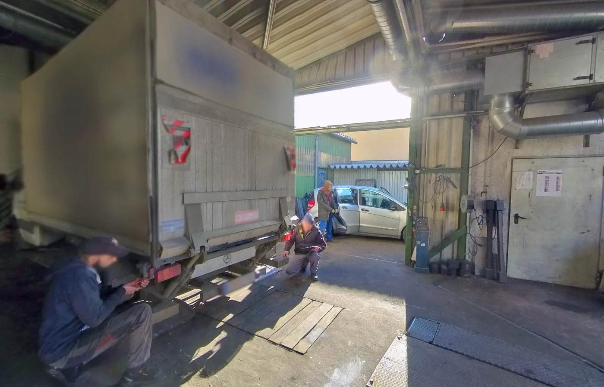

Ihr Auto braucht uns.
Sie Ihren Alltag.
Service, Pickerl und Reparatur in Wien-Favoriten.
Ein direkter Kontakt für alles, was Ihr Auto braucht.
Ein Anliegen.
Ein kurzer Weg.
Für den nächsten Service. Für die Fragen dazwischen.
Eine fällige Überprüfung, ein Problem am Auto oder ein Schaden: Besprechen Sie Ihr Anliegen direkt mit der Werkstatt. Intercars in der Oberlaaer Straße verbindet Service und Reparatur mit einem Schwerpunkt auf Glas- und Unfallschäden.
Ihr Anliegen besprechenGut betreut.
Schritt für Schritt.
Den passenden Service finden.
Den nächsten Termin persönlich abstimmen.
Noch unsicher, was nötig ist? Beschreiben Sie uns, was Ihnen aufgefallen ist.
0664 / 160 79 09 anrufen
EINBLICK IN DIE WERKSTATTHier wird angepackt.
Für Ihre nächste Fahrt.
Ihr Anliegen direkt vor Ort besprechen.
Sie finden uns in der Oberlaaer Straße 191 in Wien. Ob Wartung, Reparatur oder Pickerl: Nennen Sie uns Ihr Fahrzeug und was Sie benötigen. So lässt sich der nächste Schritt gemeinsam klären.
Fahrzeugmodell, Baujahr und eine kurze Beschreibung helfen bei der Abstimmung. Bei einem Schaden können Sie Fotos per E-Mail mitschicken.
Was jetzt zählt?
Ein klarer nächster Schritt.
Bei Glas- und Unfallschäden müssen Sie nicht alles selbst einordnen. Beschreiben Sie die Situation – und besprechen Sie mit der Werkstatt, wie es weitergeht.
Schaden besprechenKontakt aufnehmen
Rufen Sie an oder schreiben Sie eine E-Mail. Nennen Sie Ihr Fahrzeug und den Schaden.
Die Arbeiten abstimmen
Besprechen Sie die nötige Reparatur, den Ablauf und einen passenden Termin direkt mit der Werkstatt.
Den Termin vorbereiten
Fragen Sie nach den benötigten Unterlagen. Ist Ihr Auto nicht fahrbereit, klären Sie auch die Abschlepphilfe.
Vorher nachlesen.
Dann entscheiden.
Wie erleben andere die Werkstatt? Lesen Sie die Bewertungen direkt im Google-Unternehmensprofil und machen Sie sich selbst ein Bild.
Bewertungen auf Google ansehenIhre Fragen.
Klare Antworten.
Ein kurzer Anruf hilft, Ihr Anliegen einzuordnen.
Intercars kontaktierenWie vereinbare ich einen Termin?+
Rufen Sie unter 0664 / 160 79 09 an oder schreiben Sie an interkfz@hotmail.com. Nennen Sie Ihr Fahrzeug, Ihr Anliegen und Ihren Wunschtermin. Die Werkstatt bestätigt den Termin persönlich.
Kann ich mein Pickerl hier machen lassen?+
Intercars ist als § 57a-Prüfstelle gelistet. Bitte stimmen Sie bei der Anfrage ab, ob Ihr Fahrzeug geprüft werden kann und welche Unterlagen Sie mitbringen sollen.
Was mache ich bei einem Glas- oder Unfallschaden?+
Beschreiben Sie den Schaden bei einem Anruf oder in Ihrer E-Mail. Die Werkstatt stimmt mit Ihnen den nächsten Schritt und einen passenden Termin ab.
Wo finde ich die Werkstatt?+
In der Oberlaaer Straße 191, 1100 Wien. Die Zufahrt und der Eingang sind auf dem Werkstattfoto zu sehen. Über den Routenlink öffnet sich Google Maps.
Mein Auto fährt nicht mehr. Können Sie helfen?+
Ein Abschleppdienst ist im Branchenprofil angeführt. Rufen Sie an, um Verfügbarkeit und Ablauf zu klären. Die Website ist kein Notrufdienst; ein Termin oder Einsatz wird persönlich bestätigt.
Einfach erreichen.
Direkt vorbeikommen.
Ein Anruf oder eine E-Mail.
Der erste Schritt zu Ihrem Termin.
Oberlaaer Straße 191
1100 Wien
Route in Google MapsService, Pickerl oder Reparatur: Stimmen Sie Ihr Anliegen und Ihren Termin persönlich mit der Werkstatt ab.
Ihr nächster Termin
PERSÖNLICH ABSTIMMEN- Standort
- Wien-Favoriten
- Kontakt
- Telefon & E-Mail
- Termin
- Nach Vereinbarung
Nennen Sie Fahrzeugmodell, gewünschte Arbeit und Wunschtermin. Öffnungszeiten und Verfügbarkeit bitte vor Ihrem Besuch bestätigen.
Ihr nächster Schritt.
Ein kurzer Kontakt.
Wartung, Pickerl oder Reparatur: Besprechen Sie mit uns, was Ihr Auto braucht.